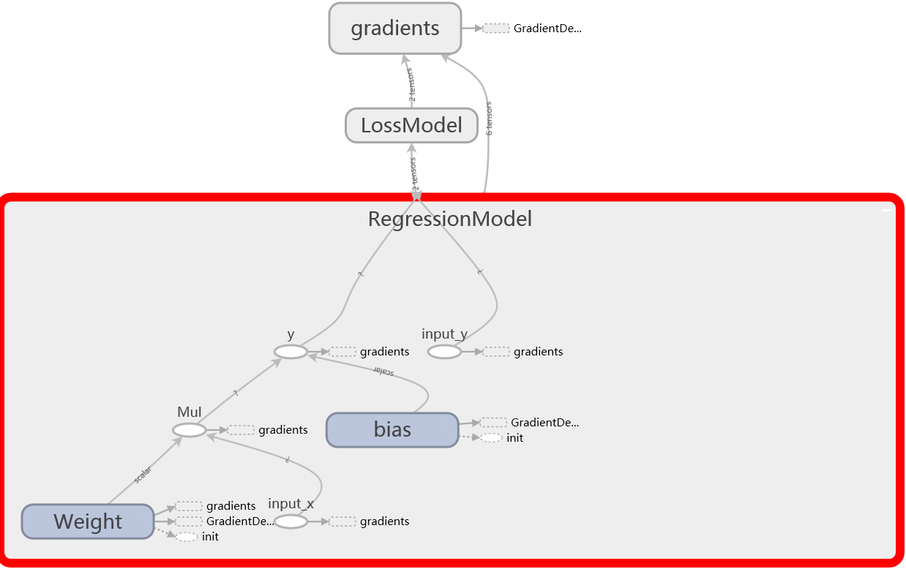
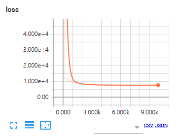

工具参考书之TensorFlow基本使用
参考：
基本概念
TensorFlow工作流程：
- Graph：使用图(Graph)来表示计算任务
- Operation：Graph中有节点
op，表示计算单元 - Tensor：Graph中的张量(Tensor)表示数据，Tensor在
op间流通 - Variable：Graph中的变量(Variable)用于维护状态
- Session：会话(Session)将Graph中的
op分发到诸如CPU或GPU之类的设备(device)上，执行Graph计算 - Feed, Fetch：使用feed和fetch可以为任意的操作赋值或者从其中获取数据
简单的关系就是：Graph中有Operation、Tensor、Variable，而Session用来管理Graph。
张量(Tensor)
TensorFlow用Tensor来表示所有的数据。你可以把一个Tensor想象成一个n维的数组或列表，一个Tensor有一个静态类型和动态类型的维数。
Tensor属性
- 阶：Tensor的维度称为阶
| 阶 | 数学实例 | Python 例子 |
|---|---|---|
| 0 | 纯量 (只有大小) | s = 483 |
| 1 | 向量(大小和方向) | v = [1.1, 2.2, 3.3] |
| 2 | 矩阵(数据表) | m = [[1, 2, 3], [4, 5, 6], [7, 8, 9]] |
| 3 | 3阶张量 (数据立体) | t = [[[2], [4], [6]], [[8], [10], [12]], [[14], [16], [18]]] |
| n | n阶 (自己想想看) | …. |
形状：形状可以通过Python中的整数列表或元组来表示，也或者用TensorShape。
数据类型：
| 数据类型 | Python 类型 | 描述 |
|---|---|---|
| DT_FLOAT | tf.float32 | 32 位浮点数 |
| DT_DOUBLE | tf.float64 | 64 位浮点数 |
| DT_INT64 | tf.int64 | 64 位有符号整型 |
| DT_INT32 | tf.int32 | 32 位有符号整型 |
| DT_INT16 | tf.int16 | 16 位有符号整型 |
| DT_INT8 | tf.int8 | 8 位有符号整型 |
| DT_UINT8 | tf.uint8 | 8 位无符号整型 |
| DT_STRING | tf.string | 可变长度的字节数组，每一个张量元素都是一个字节数组 |
| DT_BOOL | tf.bool | 布尔型 |
| DT_COMPLEX64 | tf.complex64 | 由两个32位浮点数组成的复数：实数和虚数 |
| DT_QINT32 | tf.qint32 | 用于量化Ops的32位有符号整型 |
| DT_QINT8 | tf.qint8 | 用于量化Ops的8位有符号整型 |
| DT_QUINT8 | tf.quint8 | 用于量化Ops的8位无符号整型 |
一个Tensor实例如下所示：
a = tf.constant([1, 2], dtype=tf.int64, name='const_a')
print(a.dtype) # 数据类型
print(a._rank()) # Tensor的阶
print(a.shape) # Tensor的形状
print(a.name) # Tensor的名字
print(a.graph) # Tensor所在的图Graph
print(a.device) # Tensor所在的设备device
print(a)
Tensor常量
TensorFlow提供了一系例函数来创建常量Tensor：
- 常量值
可以使用constant、zeros、zeros_like、ones、ones_like、fill等函数（与numpy中数组创建的有点类似）来创建常值，可以指定shape、dtype、name等参数。
a = tf.constant([[1, 2],
[2, 3]], dtype=tf.int64, name="const_a")
b = tf.zeros(shape=(2,2), dtype=tf.float32, name="const_b")
c = tf.ones_like(a, dtype=tf.int8, name="const_c")
d = tf.fill(dims=(2,2), value=-1, name="const_d")
- 常量序列
序列有linspace和range函数，前者可以指定序列长度，后者可以指定序列间隔。
a = tf.linspace(start=0., stop=5., num=100, name='time')
b = tf.range(0, limit=-10, delta=-1)
- 随机值
产生随机值的函数有random_normal、truncated_normal、random_uniform、random_shuffle、set_random_seed，根据名字可以知道分布表示正态分布、截尾正态分布、均匀分布等随机值。
图(Graph)
创建Graph
- 默认Graph
TensorFlow会创建一个默认的Graph，可以使用tf.get_default_graph来获取；也可以使用Graph.as_default来指定默认的图；
a = tf.constant(1.2)
print(a.graph is tf.get_default_graph()) # a在默认Graph中
g = tf.Graph()
with graph.as_default():
a = tf.constant(2.3) # 这个a是在g中
- Graph设备
可以使用Graph.device函数指定设备；或者使用tf.device来指定默认Graph使用的设备；
graph = tf.Graph()
with graph.as_default():
with graph.device('/cpu:0'):
#with tf.device('/cpu:0'):
a = tf.constant(2.3)
print(a.device)
- Scope分层
可以使用Graph.name_scope函数添加Scope分层（类似于名字空间）；或者使用tf.name_scope来为默认Graph添加Scope分层；
graph = tf.Graph()
with graph.as_default():
a = tf.constant(2.3, name='const_a')
print(a.name) # name为 'const_a'
with graph.name_scope('inner'):
a = tf.constant(2.3, name='const_a')
print(a.name) # name为 'inner/const_a'
添加Operation
创建Graph即是往Graph中添加Operation，一个Operation可以是常量、变量、数学运算、数组运算和流程逻辑控制等；
# 常量op
a = tf.constant([[1.3, 2.2],
[3.2, 4.5]], dtype=tf.float32)
b = tf.constant([[8.1, 0.8],
[0.1, 1.5]], dtype=tf.float32)
# 数组运算op
c = tf.to_int32(a)
d = tf.to_int32(b)
# 数学运算op
x = tf.matmul(a, b)
y = tf.matmul(c, d)
# 流程逻辑控制op
z = tf.equal(tf.to_int32(x), y)
会话(Session)
启动会话
在Session中开始图的计算，Session需要调用close来释放资源，或者用with代码块完成；
# 启动默认图
sess = tf.Session()
print(sess.run(z))
sess.close()
# 使用with代码块
with tf.Session() as sess:
print(sess.run(z))
# 使用as_default函数
sess = tf.Session()
with sess.as_default():
print(sess.run(z))
Fetch & Feed
使用Session.run来Fetch运算结果，结合tf.placeholder来Feed张量数据；
a = tf.placeholder(dtype=tf.float32, shape=(2,2), name="input_a")
b = tf.placeholder(dtype=tf.float32, shape=(2,2), name="input_b")
with tf.Session() as sess:
with tf.device('/cpu:0'):
print(sess.run(fetches=[x, y, z],
feed_dict={a: [[1.3, 2.2],
[3.2, 4.5]],
b: [[8.1, 0.8],
[0.1, 1.5]]}))
# fetches表示需要Fetch的运算结果
# feed_dict表示需要Feed的张量数据
变量(Variable)
按官方文档解释，Variable用于维护Graph执行过程中的状态信息。
- 创建Variable
Variable需要一个Tensor来初始化，或用Variable来初始化Variable，同时可以使用tf.Variable.assign等函数更新Variable值，即Variable是可读可写的。
# 新建Variable，用Tensor初始化
a = tf.Variable(tf.constant(1.2, dtype=tf.float32), name="var_a")
# 新建Variable，用Variable初始化
b = tf.Variable(a.initialized_value, name="var_b")
# 更新Variable
update_a = a.assign(10.2)
update_b = b.assign_add(3.5)
# Variable同样可用于Operation
c = tf.add(a, b)
- 初始化Variable
在启动Graph计算时，需要先初始化所有的Vairable，可以使用Variable.initializer或者tf.global_variables_initializer()来初始化；
init_op = tf.global_variables_initializer()
with tf.Session() as sess:
sess.run(init_op)
# sess.run(a.initializer)
# sess.run(b.initializer)
print(sess.run(c)) # 输出 2.4
sess.run([update_a, update_b])
print(sess.run(c)) # 输出 14.9
保存和加载Variable
最简单的保存和恢复模型的方法是使用tf.train.Saver对象。
- 保存
使用global_step参数可以指定Variable数据保存的编号；
saver = tf.train.Saver()
with tf.Session() as sess:
sess.run(init_op)
print(sess.run(c)) # 输出 2.4
sess.run([update_a, update_b])
print(sess.run(c)) # 输出 14.9
saver.save(sess, './model', global_step=0) # 保存的文件名为： model-0
传递dict参数可以指定需要保存的Variable；
saver = tf.train.Saver({'va': a, 'vb': b})
# 只保存和恢复a和b
- 加载
使用tf.train.Saver来恢复Variable数据时，需要初始化了；
saver = tf.train.Saver()
with tf.Session() as sess:
saver.restore(sess, './model-0') # 加载的文件名为： model-0
print(sess.run(c)) # 输出 14.9
Tensor和Variable对比
Variable和Tensor的对比可以参考这里写的；感觉用得多了，对Variable和Tensor的理解自然就上来了。
- Variable更多用于需要更新数据，如网络权重等参数；Tensor更多用于表示数学计算式，将Operation连起来；
- Variable是可读可写的，而Tensor是只读的；
- Variable需要分配内存或显存空间；Tensor作为中间结果在Graph中出现；
TF使用示例
线性回归
非常简单的线性回归模型，用Numpy生成样本数据，使用TF训练模型，并用Matplotlib画出来。
# 样本数据
data = np.linspace(0., 50., 100)
target = 5.2*data + 30.*np.random.random_sample(100)
# 线性回归模型
with tf.name_scope(name="RegressionModel"):
x = tf.placeholder(dtype=tf.float32, shape=(None,), name="input_x")
y_ = tf.placeholder(dtype=tf.float32, shape=(None,), name="input_y")
W = tf.Variable(1.0, dtype=tf.float32, name="Weight")
b = tf.Variable(0.0, dtype=tf.float32, name="bias")
y = tf.add(tf.multiply(W, x), b, name="y")
# 损失函数
with tf.name_scope(name="LossModel"):
loss = tf.reduce_sum(tf.square(y - y_), name="loss_value")
# 梯度下降
train_step = tf.train.GradientDescentOptimizer(0.00001).minimize(loss)
init_op = tf.global_variables_initializer()
sess = tf.Session()
sess.run(init_op)
feed = {x: data, y_: target}
with sess.as_default():
for k in range(10000):
sess.run(train_step, feed)
if k % 1000 == 0:
print("step: {0}, (W, b): {1}, loss: {2}".format(
k,
sess.run([W, b]),
sess.run(loss, feed)
))
# 绘图
ww, bb = sess.run([W, b])
plt.plot(data, target, 'g*')
plt.plot([0, 50], [bb, ww*50 + bb], 'r-')
plt.show()
MNIST数据示例
MNIST是一个手写数字图片数据集，图片的尺寸为28x28=784像素。TensorFlow本身在Lib\site-packages\tensorflow\examples\tutorials\mnist提供了MNIST数据下载和解析的代码。MNIST数据内容如下：
mniss.train:训练集
mnist.train.images: shape=(55000, 784)
mnist.train.labels: shape=(55000, 10)
mnist.test:测试集
mnist.test.images: shape=(10000, 784)
mnist.test.labels: shape=(10000, 10)
images: 28x28=784像素
lables: one-hot vectors，一个长度为10的向量，除了标签位为1，其余位为0
- SoftMax回归模型
SofTmax回归模型的参考代码；
mnist = input_data.read_data_sets("MNIST_data/", one_hot=True)
# softmax回归模型
x = tf.placeholder(dtype=tf.float32, shape=(None, 784), name='x')
W = tf.Variable(tf.zeros(shape=(784, 10)), name='Weights')
b = tf.Variable(tf.zeros(shape=(10,)), name='bias')
y = tf.nn.softmax(tf.matmul(x, W) + b , name='y')
# 损失函数：交叉熵
y_ = tf.placeholder(dtype=tf.float32, shape=(None, 10), name='y_')
cross_entropy = -tf.reduce_sum(y_ * tf.log(y))
# 梯度下降求解
train_step = tf.train.GradientDescentOptimizer(0.01).minimize(cross_entropy)
# 模型评估，y为预测值，y_为实际值
correct_prediction = tf.equal(tf.argmax(y, axis=1), tf.argmax(y_, axis=1))
accuracy = tf.reduce_mean(tf.cast(correct_prediction, tf.float32))
init_op = tf.global_variables_initializer()
with tf.Session() as sess:
sess.run(init_op)
# 每次随机抽取100个图片训练，相当于随机梯度下降
for _ in range(1000):
batch_xs, batch_ys = mnist.train.next_batch(100)
sess.run(train_step, feed_dict={x:batch_xs, y_: batch_ys})
# 测试
print(sess.run(accuracy, feed_dict={x:mnist.test.images, y_:mnist.test.labels}))
- NN模型
NN模型的参考代码；
关于2维卷积函数tf.nn.conv2d和池化函数tf.nn.max_pool，可以参考nn模块；
卷积和池化的数据基本形状都为[batch, height, width, channels]，batch是图片数量，height和width是图片高宽，而channels是图片深度或通道数。
def weight_variable(shape):
init = tf.truncated_normal(shape=shape, stddev=0.1)
return tf.Variable(init)
def bias_variable(shape):
init = tf.constant(0.1, shape=shape)
return tf.Variable(init)
def conv2d(x, W):
"""高宽方向的卷积步长为strides[1]和strides[2]"""
return tf.nn.conv2d(x, W, strides=[1, 1, 1, 1], padding='SAME')
def max_pool_2x2(x):
"""max池化（在2x2模版中取最大值）"""
return tf.nn.max_pool(x, ksize=[1, 2, 2, 1], strides=[1, 2, 2, 1], padding='SAME')
mnist = input_data.read_data_sets("MNIST_data/", one_hot=True)
# 将x转成28x28的灰度图
x = tf.placeholder(dtype=tf.float32, shape=(None, 784), name='x')
x_image = tf.reshape(x, [-1, 28, 28, 1])
# 第一层卷积和池化
# 卷积核为5x5大小，生成32个特征；池化后图片变成14x14
W_conv1 = weight_variable([5, 5, 1, 32])
b_conv1 = bias_variable([32])
h_conv1 = tf.nn.relu(conv2d(x_image, W_conv1) + b_conv1)
h_pool1 = max_pool_2x2(h_conv1)
# 第二层卷积和池化
# 卷积核为5x5大小，生成64个特征；池化后图片变成7x7
W_conv2 = weight_variable([5, 5, 32, 64])
b_conv2 = bias_variable([64])
h_conv2 = tf.nn.relu(conv2d(h_pool1, W_conv2) + b_conv2)
h_pool2 = max_pool_2x2(h_conv2)
h_pool2_flat = tf.reshape(h_pool2, [-1, 7*7*64])
# 全连接层，1024个神经元
W_fc1 = weight_variable([7*7*64, 1024])
b_fc1 = bias_variable([1024])
h_fc1 = tf.nn.relu(tf.matmul(h_pool2_flat, W_fc1) + b_fc1)
# dropout，减少过拟合
keep_prob = tf.placeholder(dtype=tf.float32)
h_fc1_drop = tf.nn.dropout(h_fc1, keep_prob)
# 输出层
W_fc2 = weight_variable([1024, 10])
b_fc2 = bias_variable([10])
y_conv = tf.nn.softmax(tf.matmul(h_fc1_drop, W_fc2) + b_fc2)
# 损失函数：交叉熵
y_ = tf.placeholder(dtype=tf.float32, shape=(None, 10), name='y_')
cross_entropy = -tf.reduce_sum(y_ * tf.log(y_conv))
# Adam求解
train_step = tf.train.AdamOptimizer(1e-4).minimize(cross_entropy)
# 模型评估，y为预测值，y_为实际值
correct_prediction = tf.equal(tf.argmax(y_conv, axis=1), tf.argmax(y_, axis=1))
accuracy = tf.reduce_mean(tf.cast(correct_prediction, tf.float32))
init_op = tf.global_variables_initializer()
with tf.Session() as sess:
sess.run(init_op)
# 开始使用Adam训练
for k in range(20000):
batch_xs, batch_ys = mnist.train.next_batch(50)
if k % 100 == 0:
train_accuracy = accuracy.eval(feed_dict={x:batch_xs, y_: batch_ys, keep_prob:1.0})
print("step {0}, training accuracy {1}".format(k, train_accuracy))
train_step.run(feed_dict={x:batch_xs, y_: batch_ys, keep_prob:0.5})
# 测试
test_accuracy = accuracy.eval(feed_dict={x:mnist.test.images, y_: mnist.test.labels, keep_prob:1.0})
print("test accuracy {0}".format(test_accuracy))
TensorBoard可视化
基本使用
TensorBoard是TensorFlow的可视化工具，可以展示TensorFlow图像，绘制图像生成的定量指标图以及附加数据。
如果只是想看下模型Graph，只需要添加一个tf.summary.FileWriter：
summary_writer = tf.summary.FileWriter('./board_logs', sess.graph)
# board_logs是存入TensorBoard数据的文件夹
然后tensorboard命令启动TensorBoard，在http://localhost:6006可以看到模型图了。
tensorboard --logdir board_logs
# 运行完命令后，会给出地址，不一定是http://localhost:6006
将TF使用示例中的线性回归用TensorBoard展现出来，如下图所示。

数据可视化
在tf.summary中有许多函数，可以对曲线、音频、视频等信息数据进行汇总显示。下面的代码是用scalar来绘制损失函数的值，每100次汇总一次数据。
tf.summary.scalar('loss', loss)
merged_summary_op = tf.summary.merge_all()
summary_writer = tf.summary.FileWriter('./board_logs', sess.graph)
with sess.as_default():
for k in range(10000):
sess.run(train_step, feed)
if k % 100 == 0:
summary_writer.add_summary(sess.run(merged_summary_op, feed), k)

转载请注明来源，欢迎对文章中的引用来源进行考证，欢迎指出任何有错误或不够清晰的表达。可以在下面评论区评论，也可以邮件至 [ yehuohan@gmail.com ]
文章标题:工具参考书之TensorFlow基本使用
本文作者:z000tech
发布时间:2018-06-09, 01:27:28
最后更新:2019-05-21, 20:49:00
原始链接:http://yehuohan.github.io/2018/06/09/笔记/DOC/工具参考书之TensorFlow基本使用/版权声明: "署名-非商用-相同方式共享 4.0" 转载请保留原文链接及作者。